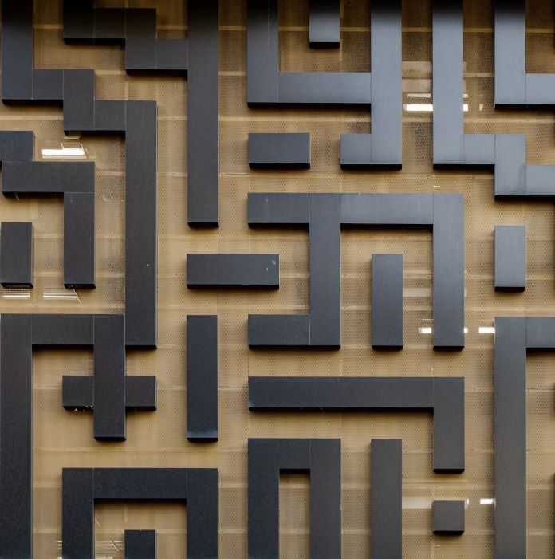
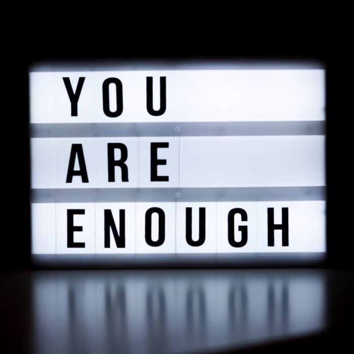
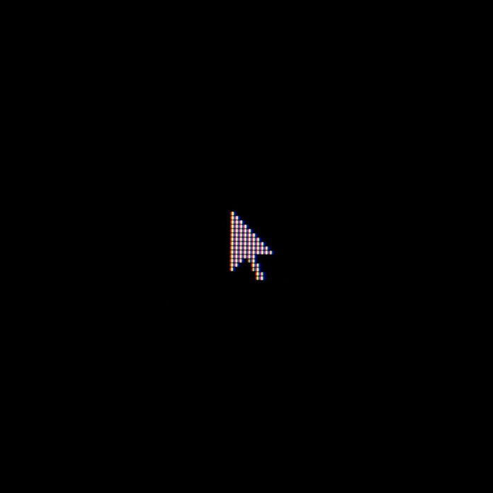

Это было самое начало пути. На этом этапе важно было проникнуться
основами и настроиться на учёбу. И, возможно, подумать, как новые
знания могут повлиять на ваше будущее.
Я была на волне энтузиазма. Хотелось поскорее погрузиться в учебу,
знакомиться с новыми людьми, участвовать во всех активностях,
несмотря на то, что я интроверт. Было немного страшно, но интересно.
1 спринт: Я — чистый лист
<foundation>
На первых этапах мы работали со страхами и сомнениями, которые часто
испытывают новички. Один из них — страх перед чистым листом. Это,
конечно же, намного сложнее, чем боязнь куска бумаги. Часто за этим
ощущением скрываются более глубокие вопросы: с чего начать? а вдруг
будет слишком сложно? что, если я не справлюсь?
Для меня очень важным было мочь начать проект с полного нуля. Я
хотела иметь в голове четкую последовательность действий, план,
которому я буду следовать, приступая к каждому новому проекту.
1 спринт: А если не получится?
<delight>
Первый проект — позади! Но это всё ещё самое начало пути. Радость
могла быстро померкнуть и смениться ожиданием провала. Или вы,
наоборот, могли вдохновиться успехами и поверить в себя.
Отдельно хочется вспомнить, как я пыталась вникнуть в гриды.
Подружиться с ними мне помог очаровательный GridGarden. Со временем
гриды стали как родные. Первый проект не только убедил меня, что всё
получится, но и что получится хорошо и красиво.
2 спринт: Погоня за идеалом
<experience>
На этом этапе вы уже достаточно разбирались в основах вёрстки, чтобы
понять, как много ещё впереди. Вы могли попытаться погнаться за
идеалом и понять, что он недостижим. А, может, вы вовсе и не
подвержены перфекционизму и вместо того, чтобы сделать идеально,
старались просто сделать.
Опыт последних нескольких лет показал, что лучшее бывает врагом
хорошего, а излишний перфекционизм может вгонять в тревогу. В погоне
за идеалом можно никогда не прекратить работу над проектом, и тогда
мир никогда его не увидит. Но это не означает, что нужно перестать
стремиться к идеалу. Нужно просто выполнять работу качественно,
постепенно становясь профессионалом в своем деле.
2 спринт: О тех, кто рядом
<concern>
Всё это время вы были не одиноки (хотя, возможно, иногда и
чувствовали, что одни против целого мира). Вас окружали
одногруппники, команда сопровождения и просто близкие люди, которым
можно пожаловаться, если очередной макет просто так не поддавался.
Осваивать что-то новое легче, когда рядом есть единомышленники, не
правда ли?
Я с радостью рассказывала о своих впечатлениях о курсе своему другу,
который закончил Яндекс Практикум несколько лет назад. Ещё приятно
показать кому-нибудь макет и похвастаться, что я смогла воплотить
его в вебе.
3 спринт: Обходные стратегии
<brainstorm>

На этом курсе вы постоянно решали разные задачи. В какой-то момент
вам могло показаться, что решения просто иссякли. Значит, пришло
время посмотреть на задачу под другим углом.
Это одновременно самое большое страдание и самый большой кайф в
программировании. Кайф, когда ты смог понять, почему оно не
работает, как оно в принципе работает и как сделать так, чтобы оно
заработало. Страдание, когда ты в упор не видишь причину, бесконечно
гуглишь, пробуешь десяток разных вариантов, но ничего не помогает.
Здесь нужно перейти к следующей карточке ↓.
3 спринт: Когда опускаются руки
<respite>

Во время учёбы часто возникает чувство, когда не знаешь, за что
хвататься. Вроде и проектную пора сдавать, и задачи хочется
порешать, и в теории получше разобраться, и жизнь не забыть пожить.
В такие моменты очень нужна концентрация. Вспомните, откуда вы её
черпали.
В моменты, когда всё давит со всех сторон, или в голове уже не
осталось никаких мыслей, нужно сделать перерыв. Походить, вспомнить,
что пора поесть, закончить работать на сегодня, разрешить себе
заслуженно отдохнуть.
«Сейчас я здесь»
<foretaste>

Сейчас вы уже очень много знаете о вёрстке. Но это только начало.
Во-первых, впереди ещё много материала про «красотищу». Во-вторых, с
окончанием курса учёба не заканчивается. Вёрстка — это целый мир. И
этот мир постоянно меняется. Познать его полностью не получится, но
это тот случай, когда важен сам процесс познания. Ведь часто путь —
и есть результат.
Сейчас я нахожусь в предвкушении JavaScript и Нового года. Осознание
того, что большой модуль по вёрстке пройден, придаёт значимости и
весомости пройденному пути. Но многое ещё только предстоит.